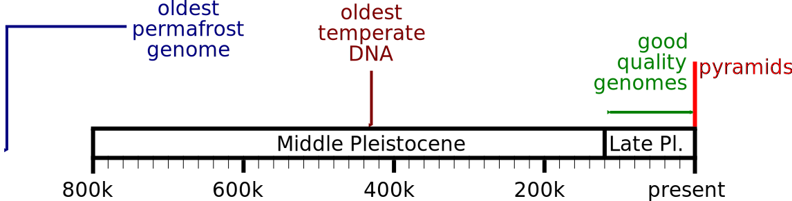
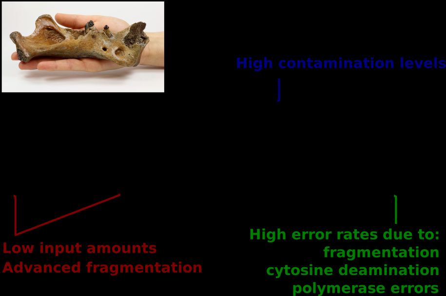
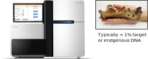
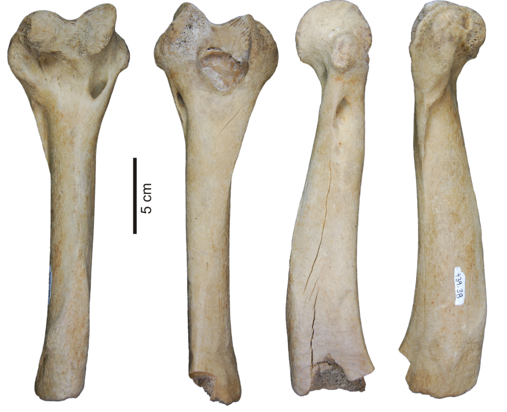

Ancient DNA
BIOL14406: Living Systems
Dr Axel Barlow
email: axel.barlow@ntu.ac.uk
Ancient DNA
- Mitochondrial phylogenetics
- Ancient DNA
- Sabretooth cats
- Sequencing the North Sea Homotherium

Paijmans et al. 2017
Mitochondrial phylogenetics
You've probably seen diagrams like this...
This is called a phylogeny. It represents the evolutionary process
- The phylogeny works like an evolutionary tree
- The tips are species
- The branches show their relationships
- Nodes represents common ancestors, from which new species evolved
- Generally, phylogenies are calculated using genetic data

Inheritance plus mutation
- Errors in DNA replication (mutations) change the DNA sequence
- Human mutation rate is ~1.1×10−8 mutations per site per generation
- This means you carry ~40 mutations in your 3.6 Gb genome
- These differences are inherited by offspring
- Sequence divergence and time are (approximately) linearly related
Phylogenetics works in reverse: we observe the DNA sequences and try to work out the tree that generated them
DNA sequence alignment

Mitochondrial DNA is great for phylogenetics!

Mitochondrial DNA is great for phylogenetics!
- Mitochondrial genome ~16 kb
- 13 protein-coding genes, 2 rRNAs and 22 tRNAs
- High mutation rate
- No recombination
- High copy number per cell
- Maternally inherited

Emmanuel Douzery, CC BY-SA 4.0

Ancient DNA
Ancient DNA is just old DNA

Some samples don't fit in the lab!

Timeline of ancient DNA

Study species

Glyptodont, WolfmanSF, CC BY_SA 3.0
What are the challenges?

Ancient DNA work is contamination sensitive

Ancient DNA work is contamination sensitive

But the samples are already highly contaminated

Sabretooth cats
There were two genera of sabretooth cats
- A genus us a group of closely related species. It's the first part of the scientific name
- e.g. Homo sapiens
Smilodon
- The most commonly known group
- Massive canines
- > 400 kg and 120 cm shoulder height
- N and S America
- 3 species, S. gracilis, S. populator, S. fatalis
- Extinction 10 ka

There were two genera of sabretooth cats
- A genus us a group of closely related species. It's the first part of the scientific name
- e.g. Homo sapiens)
Homotherium
- Less known group
- Also known as scimitar-toothed cats
- Flat, serrated canines
- ~ 200 kg and 110 cm shoulder height
- Europe, Africa, N and S America
- Europe: H. latidens, extinction 300 ka
- N. America: H. serum, extinction 12 ka

Sergiodlarosa, CC BY-SA 3.0
Homotherium skull

Ghedoghedo, CC BY-SA 4.0
Fishing for fossils
- Britain connected to mainland Europe by an area called Doggerland
- Rising sea levels 6-7 ka flooded the area, making Britain an island


Max Naylor, CC BY-SA 3.0
16th March 2000, something surprising turned up...

This didn't look like a 300 ka fossil
Analysis of the Dutch North Sea Homotherium
Dating
- The bone was radiocarbon dated at 31,300 ± 400!
This was extraordinary, so the dating was repeated:
- 31,300 ± 400
- 26,900 ± 400
- 26,700 ± 240
- 28,100 ± 220
- 27,650 ± 280
The first Late Pleistocene European Homotherium
Analysis of the Dutch North Sea Homotherium
Ancient DNA

- A sample was taken in 2006 by Prof. Michi Hofreiter
- Some tiny sequences were recovered, but they were too short to provide conclusive results...
Sequencing the North Sea Homotherium
By 2014 the technology had improved substantially
- Widespread adoption of Next Generation Sequencing by the aDNA community
- Improved DNA extraction methods
- Improved library preparation methods
- A targeted sequencing technique called DNA hybridisation capture
- Michi gave the sample to his PhD student, Johanna Paijmans, to try again
Initial sequencing showed extremely high contamination
DNA hybridisation capture
"Fishes" mitochondrial fragments from the contaminated ancient DNA
- DNA has 2 strands, arrange in a double helix
- It can be heat denatured
- When cooled, the single strands will stick (hybridise) to strands with a similar sequence
- Manufacture "bait" sequences that match your target region
- Use to capture these sequences from the contaminants

Magladem96, CC BY-SA 3.0
DNA hybridisation capture

This only works if you know the sequence in advance
Meanwhile a Danish group were sequencing North American cave lion mtDNA
- Sequence analysis showed it was actually a Homotherium
- They provided the sequence and Johanna ordered the hybridisation cature baits

The hybridisation capture worked!

Phylogenetic analysis of sabretooth cats

The final step: molecular dating
- Molecular phylogenies are scaled to genetic divergence
- We know genetic divergence and time are linearly related
If we know some of the divergence times, we can scale the tree to time
Phylogenetic analysis of sabretooth cats

Molecular dating of sabretooth cats
- Sabretooths divergence from living cats 20 Ma
- Homotherium and Smilodon were more diverged from one another than any living cats
- A huge diversity was lost with the extinction of the sabretooths
- North American and European Homotherium were genetically similar
- We recommended they be treated as a single species, H. latidens
Paijmans et al. 2017
Ancient DNA
An exciting and dynamic field driven by technological advances